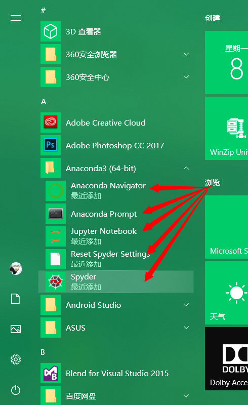

前言
在入手学习深度学习的过程当中，有好几个朋友都咨询过我如何安装深度学习环境，之前写过一篇在Ubuntu环境下安装深度学习环境，但是有部分朋友在Windows电脑上安装深度学习环境遇到过许多的问题，所以我就再写一篇Windows系统上安装GPU深度学习环境的教程，希望对刚刚入手深度学习的朋友有所帮助:)
PS:不需要自己手动安装CUDA和cuDNN（安装这两样东西属实要劝退不少朋友），网上许多的博客都是说要安装CUDA和cuDNN，但是选择Tensorflow-GPU版本或者PyTorch-GPU版本中都会自带已经简化了的CUDA和cuDNN的包，所以不再需要我们自己去手动安装了！！！
一、Conda环境搭建
Anaconda可以帮助我们很好的管理python环境（大家应该都是用python来玩深度学习的吧囧rz），例如我电脑中想要有python2.7和python3.6两个版本的python编译器，那么就可以用Anaconda创建两个python版本的虚拟环境，这两个虚拟环境中都可以安装各自的包，互相不影响。
1、Anaconda的下载
人生苦短，我选择在在清华园镜像中下载Anaconda，因为我的电脑是Window10 64位，所以我选择的版本是Windows-x86_64后缀的，至于版本号，可以自己选择，我选的是Anaconda3-5.1.0。
2、Anaconda的安装
下载速度还是蛮快的，下载成功之后就是安装过程，前面几个都是一路next，到Advanced Options部分，我选的是Add Anaconda to my PATH environment variable（将Anaconda安装路径加入环境变量，省得自己再去加环境变量）。
接下来就是安装过程可能要花一些时间，如果在安装途中出现了cmd的黑窗口，千万不要自己手抖把它给关了，cmd的黑窗口可能是在下载一些东西，我就是之前手抖把黑窗口关了，就出现了一些安装失败的问题，详情可以看我的另一篇博客。如果自己安装结束之后应该包含有下图的几个内容。

在Anaconda Prompt输入conda list成功显示出结果时，说明Anaconda安装成功啦!
3、conda创建python虚拟环境
为了使自己的python深度学习环境不和其他python相冲突，我们需要使用Conda创建一个python的虚拟环境。我创建的是一个叫做DPlearning_3.6的python3.6版本环境。在虚拟环境安装成功之后，使用activate DPlearning_3.6命令切换到这个虚拟环境中。
创建python3.6的虚拟环境 名字叫做DPlearning_3.6
conda create -n DPlearning_3.6 python=3.6
#切换到DPlearning_3.6虚拟环境
activate DPlearning_3.6可以从上图中看到下载包的网速还是比较慢的，所以我们选择添加清华源的镜像。
conda config --add channels https://mirrors.tuna.tsinghua.edu.cn/anaconda/pkgs/free/
conda config --add channels https://mirrors.tuna.tsinghua.edu.cn/anaconda/pkgs/main/
conda config --set show_channel_urls yes三、GPU环境搭建
1、了解自己电脑显卡驱动版本
人最重要的是要了解自己。
——我说的
因为有部分小伙伴对自己电脑显卡驱动的版本不了解，所以选择Tensorflow或者PyTorch的版本的时候会出现安装了，但不兼容的问题，所以我们首先要了解自己电脑显卡驱动版本:)
1.1 首先在Windows设置中搜索控制面板(按Win键，然后点击左下方的设置按钮就可以到Windows设置页面)。
1.2 在控制面板中点击NVIDIA控制面板。
1.3 NVIDIA控制面板中点击“帮助”下面的“系统信息”。
1.4 查看驱动程序版本，我的显卡驱动版本是388.57。
1.5 根据显卡驱动版本确定自己能使用的CUDA Tookit版本。我的显卡驱动版本是388.57,介于385.54和391.29之间，由下图可知，我所能选用的CUDA Tookit版本只有CUDA 9.0。
2、安装正确的TensorFlow-GPU版本
我已经知道我的电脑只能用CUDA 9.0版本的包，现在要选择正确的深度学习框架版本，现在主流的深度学习框架是TensorFlow和PyTorch，我们首先看到TensorFlow框架(不安装Tensorflow框架的可以直接去看安装PyTorch框架的部分)。
由下面的TensorFlow版本和CUDA版本对应图可以看出，适用于CUDA版本为9的TensorFlow-gpu版本为1.5-1.12之间，我选择1.8进行安装。
PS：同时可以看到Python版本的对应关系，CUDA 9支持的python最高版本是python3.6，只有CUDA 10及以上才支持python3.7，所以创建的python虚拟环境最好为pyhon3.6版本的。
#(首先要确保自己在之前创建的DPlearning_3.6环境下)
activate DPlearning_3.6
#安装Tensorflow-gpu 1.8.0版本
conda install tensorflow-gpu=1.8.0可以看到TensorFlow的安装包是包含有cudatoolkit和cudnn的，所以不需要我们自己再去安装CUDA和cuDNN（突然比心.jpg）,因为加了清华源镜像，所以下载速度还是蛮快的。
PS：注意看下图的部分包的名字里面带有py36的字样，如果你的python环境是3.7，使用这种包可能会出现问题。（之前有师弟就是用的pyhon3.7版本，TensorFlow版本也是选的支持python3.7的版本，但总是安装不成功，换成python3.6版本就成功了）
TensorFlow下载安装结束之后，使用import tensorflow as tf命令来看是否成功安装（现实总是很骨感，报错了orz），可以看到报错的内容主要是关于numpy，但我相信“方法总比困难多”，通过网上查找解决方法，了解到是因为numpy版本太高了，我重新安装numpy=1.16.0版本的就解决了。（不同的Tensorflow版本可能对应的numpy版本不同，小伙伴们可以多试几个numpy版本）。
#以下操作都是在DPlearning_3.6的虚拟环境下进行的
#安装numpy1.16.0的包
conda install numpy=1.16.0
#查看tensorflow是否安装成功
python
import tensorflow as tfboy
print(tfboy.test.is_gpu_available()) #显示True说明安装成功了至此你已经成功成为一名tfboy or tfgirl？？？ Congratulations！！！
3、安装正确的PyTorch-GPU版本
接着PyTorch版本的安装（如果自己喜欢使用TensorFlow框架，就没必要安装PyTorch框架了）,到PyTorch的官网可以很方便的找到自己需要的PyTorch版本，我用的是CUDA 9.0版本。
PS:私以为PyTorch安装要比TensorFlow简单些？？？
#cudatoolkit=9.0表示用的是cuda 9.0的包（不像tensorflow还需要对应各种版本，直接在官网找到cuda 9.0对应的安装代码就行了）
conda install pytorch==1.1.0 torchvision==0.3.0 cudatoolkit=9.0 -c pytorch
#安装成功后进入python环境中验证一下
python
import torch
print(torch.cuda.is_available()) #结果为True就说明成功了三、总结
我感觉总的流程还是算比较简单的，Anaconda负责包的管理，CUDA负责GPU的加速处理，但TensorFlow和PyTorch的安装包里面都是自带了简化的CUDA toolkit，所以只需要根据自己电脑的显卡驱动版本，确定自己电脑能使用的Tensoflow或者PyTorch包进行安装就行了，不需要自己手动安装CUDA和cuDNN！
因为生活中经常有小伙伴问我这些问题，加上之前在安装深度学习GPU环境上也踩过很多的坑，所以我就记录成一篇博客希望对有同样需求的小伙伴有所帮助，欢迎评论区拍砖！！！，如果对Ubuntu上安装深度学习环境感兴趣可以参考我另一篇博客。
码字不易，如果对你有所帮助，麻烦点个赞再走吧:)
未经许可，请勿随意转载！
参考：
https://www.jianshu.com/p/d3b9419a0f89
https://docs.nvidia.com/cuda/cuda-toolkit-release-notes/index.html
https://www.tensorflow.org/install/source#common_installation_problems